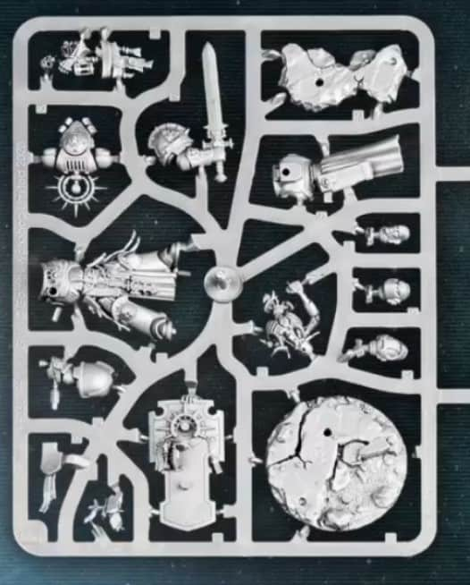
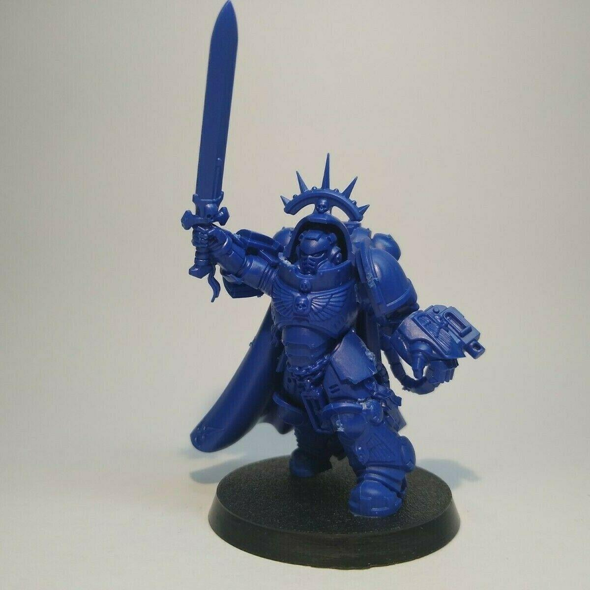

My Favorite Hobby
I like a lot of different things. However, I do have one hobby that I like more than all the others: playing wargames. My favorite is a game called Warhammer, and I would like to talk a bit about what this game is and why I enjoy it.
This is a hobby with a lot of different stages besides just playing a game, including:
In this page I will review each stage of this hobby and why I love it and think it is a great way to express creativity, challenge your mind, and practice fine motor skills.
Collecting and Assembling
The first part of playing Warhammer is choosing and collecting your army. There are dozens of armies to choose from, with each having their own unique lore, playstyle, and miniatures. This can be a complex process, where you must make your decision based on:
- What models you like the look of
- What lore you find interesting
- What playstyle you prefer
- What models are available to you
- What models you can afford
One last thing to consider for those who want to focus less on the building and collecting and more on the game itself is the competitive viability of each faction. This is a living game that is constantly balanced and changed, with updates happening roughly monthly. Below is a current graph showing the win rates for each faction from the most recent play data.

Note that this constantly changes, so picking an army based on their competitive viability is not a good idea as generally the rules will have shifted by the time you are able to make a full army capable of playing the game. Once you have purchased some models, we can get into the assembly portion of the game
Assembly involves several steps, including:
- Cleaning the models
Models come in a plastic mold referred to as "sprues". In order to get the models ready for assembly, you must:
- Cut the models free using a sharp hobby knife or clippers
- Shave off the remnants of the sprue connections using a sharp hobby knife
- Use the back of your knife to remove the mold lines and any other imperfections, leaving a smooth surface across the model
Once this is done, we can move onto the next step.
- Assembling the models
Models are assembled using a strong plastic glue that melts the plastic together. This is a very simple process, where you:
- Apply a small amount of glue to the pieces you want to connect
- Press the pieces together and hold for a few seconds
- Repeat until the model is fully assembled
Once this is done, we can move onto the final step of assembly
- Priming the models
Priming is an essential step in preparing your models for painting. It involves applying a base coat of primer to the model to help the paint adhere better. This is done using:
- Acrylic spray primer for a smooth, even coat
- Brush-on primer for more control and detail work
Once the primer is dry, your models should look like the one shown here and they are ready for painting!

Painting
When it comes to painting, there are dozens of different ways in which you can paint your models. There are official color schemes if you need inspiration, but you can really pick whatever makes you feel like the soldiers are your own. However, there is some equipment you will need. This includes:
- High-quality acrylic paints (Make sure they are acrylic paints!! Other paints won't stick correctly)
- Fine detail brushes
- Palette for mixing colors
- Water cup for rinsing brushes
- Paper towels for drying brushes
- And a light source for seeing details
Once you have the required materials, you are good to start painting! Here's a quick Youtube video to help you paint your first model:
Click here for some painting inspiration!
Creating an Army
Now that you have picked, assembled, and painted some models, it's time to field your army! From the faction you have chosen and with the models you have, you must organize them into a cohesive force. This involves:
- Choosing a Detachment
A Detachment is a specific set of rules that governs how your army is organized. It determines the number of units you can take, their roles, and any special rules they may have.
- Creating a suitable army list that fits your chosen faction
An army list is a collection of units that you can field in a game. Each unit has its own strengths, weaknesses, and abilities, and you must choose them wisely to create a balanced force.
- Choosing a Warlord and their associated traits
A Warlord is a special unit that leads your army and has unique abilities. You must choose a Warlord that fits your playstyle and complements your army.
- Deciding which equipment to Use
Equipment is a crucial part of your army, as it determines how your units perform in battle. You must choose equipment that enhances your units' strengths and mitigates their weaknesses.
Once you have created your army, you are ready to play! Now, you just need to find a friend to play with
Playing the Game
Now that you have your army ready, it's time to learn how to play the game! Here are some key points to keep in mind:
- Understand the turn structure: Each player takes turns performing actions with their units.
- Know your objectives: Familiarize yourself with the mission objectives and how to achieve them.
- Utilize strategy: Position your units wisely and make use of cover and terrain.
- Keep track of rules: Be aware of the rules governing your units and their abilities.
- Be a good sport: Remember that it's just a game, and the most important thing is to have fun!
With these tips in mind, you're ready to dive into your first game. Have fun and may your dice roll high!